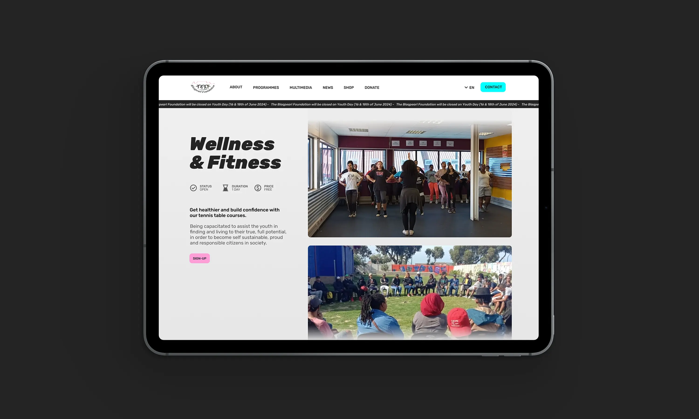

Blaqpearl Foundation
Webdesign
Made in Cape Town
Fondée en 2016 par Janine Van Rooy-Overmeyer (alias “Blaqpearl”) et Shane Overmeyer, la Blaqpearl Foundation est une association à but non lucratif sud-africaine basée à Mitchell's Plain, spécialisée dans la création de programmes d'empowerment à destination des jeunes.
Grâce à l'art, au sport et à d'autres ateliers, l'association permet à ses membres de devélopper des compétences et d'atteindre leur plein potentiel pour entrer sur le marché du travail.
Un nouveau site internet
L'ancien site internet de l'association, datant de 2017, était construit sur Wordpress avec le builder Divi. J'ai proposé de passer sur Beaver Lite, un nouveau builder gratuit, tout en choisissant un thème plus accessible : OceanWP.
Année
Septembre 2024
Read in English 🇬🇧